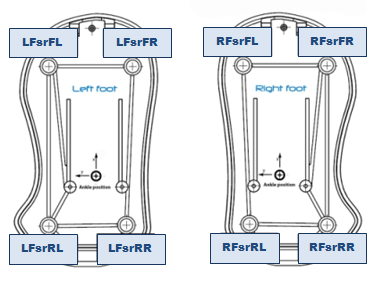

NAO Hardware | Product range | Motors & Kinematics | Components & Sensors | Optional devices
Components & Sensors | Contact Sensors | FSRs | Inertial unit | MRE | Sonars
See also
These sensors measure a resistance change according to the pressure applied. The FSR located on the feet have a working range from 0 N to 25 N.
| FSR Name | Position X (m) [Ankle Frame] | Position Y (m) [Ankle Frame] |
|---|---|---|
| LFsrFL | 0.07025 [LEFT] | 0.0299 [LEFT] |
| LFsrFR | 0.07025[LEFT] | -0.0231 [LEFT] |
| LFsrRL | -0.03025 [LEFT] | 0.0299[LEFT] |
| LFsrRR | -0.02965 [LEFT] | -0.0191 [LEFT] |
| RFsrFL | 0.07025 [RIGHT] | 0.0231 [RIGHT] |
| RFsrFR | 0.07025 [RIGHT] | -0.0299 [RIGHT] |
| RFsrRL | -0.03025 [RIGHT] | 0.0191 [RIGHT] |
| RFsrRR | -0.02965 [RIGHT] | -0.0299 [RIGHT] |
Left Foot(kilograms):
Device/SubDeviceList/LFoot/FSR/FrontLeft/Sensor/Value
Device/SubDeviceList/LFoot/FSR/FrontRight/Sensor/Value
Device/SubDeviceList/LFoot/FSR/RearLeft/Sensor/Value
Device/SubDeviceList/LFoot/FSR/RearRight/Sensor/Value
Right Foot(kilograms):
Device/SubDeviceList/RFoot/FSR/FrontLeft/Sensor/Value
Device/SubDeviceList/RFoot/FSR/FrontRight/Sensor/Value
Device/SubDeviceList/RFoot/FSR/RearLeft/Sensor/Value
Device/SubDeviceList/RFoot/FSR/RearRight/Sensor/Value